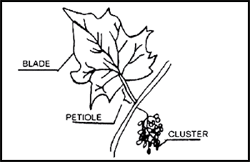

| Crop |
Plant Part to Sample |
Time of Sampling |
| Alfalfa |
Mid stems |
1/10 Bloom |
| Asparagus |
Fern needles 4" tip section |
September |
| Cabbage |
Midrib of wrapper leaf |
At heading |
| Cantaloupe & Cucumber |
Petiole of 6th leaf from growing tip |
6-8 true leaves Early fruit set |
| Citrus |
5-7 mo. old bloom cycle leaves from nonfruiting terminals |
Aug 15 to Oct 15 |
| Deciduous Fruit Trees except Peaches |
Mature leaf, 2-5 mo. old Spur leaves for almonds, apples, apricot, cherry, pear, plum and prunes |
June and July |
| Grapes |
Petiole - opposite cluster |
Bloom |
|  |
| Peaches |
Basal to midshoot leaves |
June and July |
| Tomato |
Petiole of recently matured leaf (4th leaf from growing tip) |
Early Bloom, 1" Fruit, lst Color |
| Woody Ornamentals Deciduous & Evergreen |
Recently mature leaf |
Late June to September December to March |